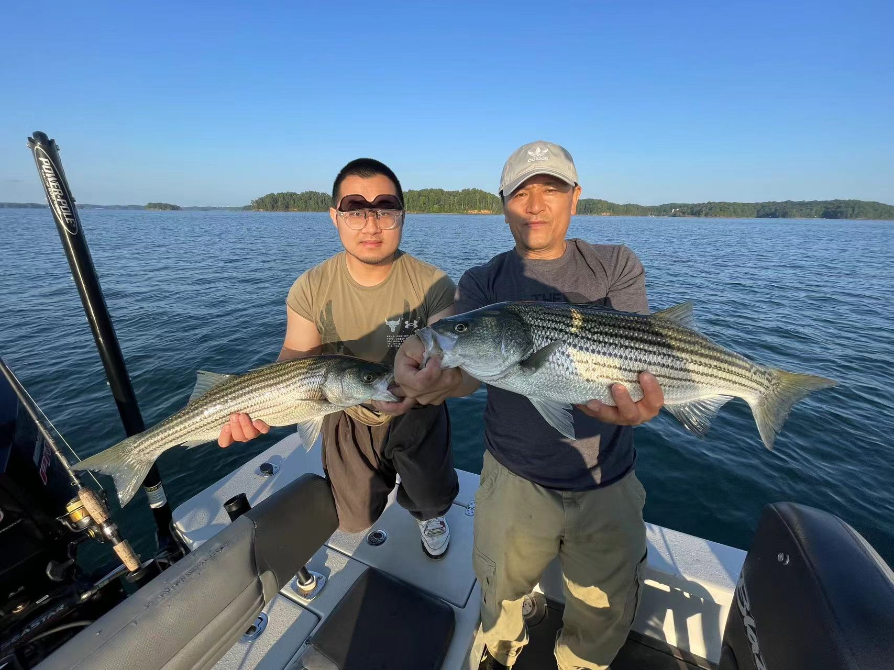

Us
Comment🇺🇸 Langsam beeilen
The title is a German slang phrase that means “slowly hurry/go.” I learned it from my German friend, Franz, during a volunteering project, and I fell in love with its meaning. People often want to have everything perfectly planned before starting something, but that mindset can slow you down. Nothing is ever truly perfect. “Slowly hurry/go” captures the idea of moving forward, even if you’re not fully prepared.
Similarly, my trip wasn’t perfectly planned, but once I hit the road, I knew I had made the right choice. My first stop was Atlanta and then Miami. With over 60 pounds of luggage, I flew from Chicago to Atlanta to visit Uncle Frank, my dad’s former classmate, who lives there. I stayed with him for a week, and we went fishing, worked out, and shot guns—a full “American-style” experience. It was also my first time fishing. The guide used radar and sonar to detect fish, and we managed to catch more than ten weavers. They’re tasty, but a bit tricky to cook. To top it all off, we enjoyed some Chinese food, which I had been missing so much! Time passed quickly, and before I knew it, I was on my way to Miami to catch my next flight.

In Miami, I met up with friends and did some sightseeing. One of my best friends, Cong, flew in from Boston to see me off. She brought along some essentials I would need for my travels. Cong, a lecturer at MIT, is someone I truly admire, and we even discussed some details of writing an academic paper—yes, I managed to do some research while traveling! Another friend, a former classmate, worked for a landscape architecture firm. He vented about his boss and grueling work schedule, often over ten hours a day. It made me realize how international students can sometimes be at a disadvantage in the job market. I also stayed with a British family who were my hosts. The husband was Canadian, and his wife was Cuban, and they had a son named Lin—interestingly, a typical Chinese surname. The hostess explained that she loved Chinese names. When I mentioned that Cuba was my next destination, she was surprised. She made some phone calls to her family in Cuba to check on the current situation, warning me that it wasn’t an ideal time to visit due to the poor economic conditions. Though her concerns made me a bit anxious, I still wanted to see things for myself. So, I gave her my contact information and promised to update her on my travels.
On July 28th, 2023, I left for Cuba, a mysterious country in my “world”.